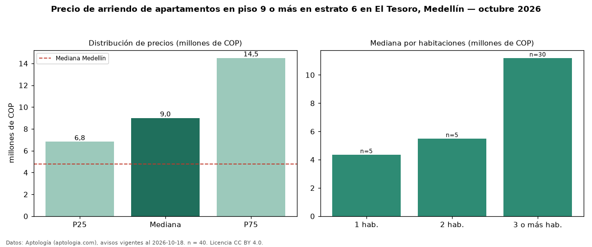

Precio de arriendo de apartamentos en piso 9 o más en estrato 6 en El Tesoro, Medellín — octubre 2026
Con 40 avisos vigentes, el canon mediano de apartamentos en piso 9 o más en estrato 6 en arriendo en El Tesoro, Medellín es COP 9,00 millones al mes. Eso es 6 % más que la mediana de los apartamentos en estrato 6 en arriendo de El Tesoro (COP 8,50 millones, n = 384); este segmento reúne el 10 % de esos avisos. Por metro cuadrado, la mediana es COP 59.605/m² al mes (n = 39), 8 % por encima de los apartamentos en estrato 6 en arriendo de El Tesoro (COP 55.000/m²). El área mediana anunciada es 164 m². El segmento con más oferta es el de 3 o más habitaciones (30 avisos, mediana COP 11,20 millones); pasar de 1 habitación a 3 o más habitaciones cambia la mediana +157 %. La mitad central de los avisos va de COP 6,83 millones a COP 14,50 millones (razón 2,1), una dispersión alta. La mediana de todos los apartamentos en arriendo de Medellín es COP 4,80 millones (+88 % de diferencia). Datos: Aptología (aptologia.com), CC BY 4.0 — https://www.aptologia.com/arriendo/medellin/el-tesoro. Archivos: PDF, CSV con las cifras y gráfica PNG.

| Avisos únicos | 40 |
|---|---|
| Percentil 25 | COP 6.825.000 |
| Mediana | COP 9.000.000 |
| Percentil 75 | COP 14.500.000 |
| Mediana por m² | COP 59.605 |
Fuente: avisos vigentes de portales inmobiliarios recopilados por Aptología, deduplicados (mínimo 30 avisos únicos por celda). Precios pedidos, no cerrados. Fecha: 2026-10-18.